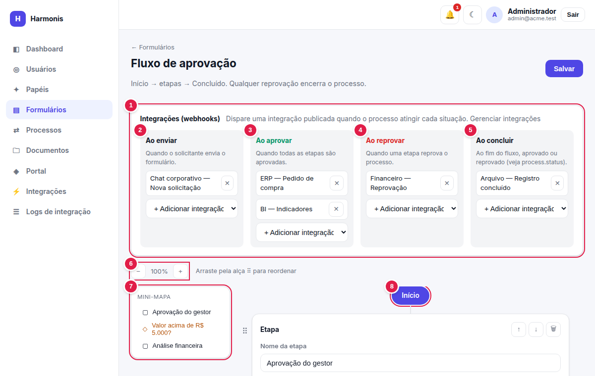
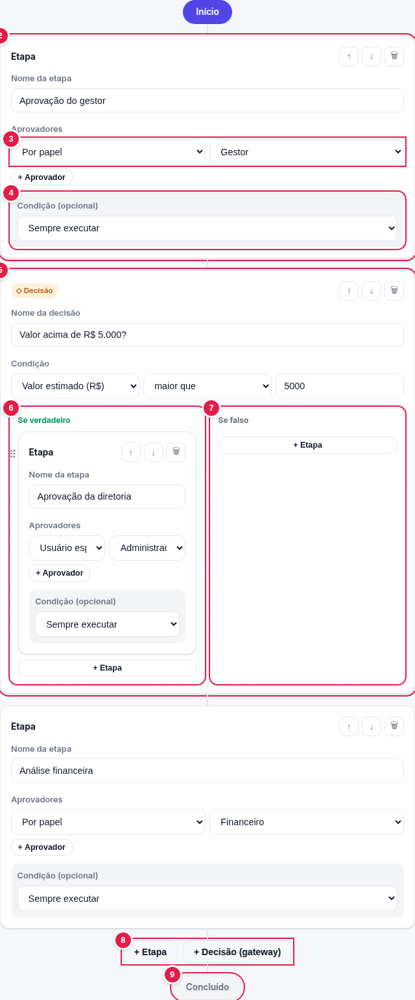

Fluxo de aprovação
Como desenhar o caminho que uma resposta percorre: etapas, aprovadores, condições, decisões e integrações disparadas em cada situação.
forms.update — abra o editor pelo ícone ⇄ na lista de formulários.
Como o fluxo funciona
O fluxo é uma lista de nós executados de cima para baixo. Existem dois tipos de nó:
Um passo de aprovação, com um ou mais aprovadores e, opcionalmente, uma condição para ser executada.
Um desvio: avalia uma condição sobre as respostas e segue por “Se verdadeiro” ou “Se falso”, cada ramo com suas etapas.
O editor de fluxo

- Integrações (webhooks) — escolha, para este formulário, o que disparar em cada situação (veja abaixo).
- Ao enviar — quando o solicitante envia o formulário.
- Ao aprovar — quando todas as etapas são aprovadas.
- Ao reprovar — quando uma etapa reprova o processo.
- Ao concluir — ao fim do fluxo, qualquer que seja o resultado.
- Zoom — − / + de 50% a 150% para enxergar fluxos longos.
- Mini-mapa — lista as etapas e decisões do nível principal; clique em uma para rolar até ela.
- Início — ponto de partida (fixo). Abaixo dele ficam os nós, na ordem de execução.
O botão Salvar (canto superior direito) grava juntos o fluxo e as integrações escolhidas; o selo Salvo confirma. Enquanto você não salvar, nada muda para quem usa o formulário.

- Início — fixo.
- Etapa — cartão de uma etapa de aprovação.
- Aprovadores — quem decide a etapa.
- Condição (opcional) — faz a etapa ser executada só quando a regra for verdadeira.
- Decisão (gateway) — nó que escolhe um dos ramos conforme os dados.
- Se verdadeiro — etapas executadas quando a condição da decisão é atendida.
- Se falso — etapas executadas quando não é atendida (pode ficar vazio).
- + Etapa / + Decisão — adiciona um novo nó ao final do fluxo.
- Concluído — fim do fluxo: se chegou aqui sem reprovação, o processo está Aprovado.
Arraste uma etapa ou decisão pela alça ⠿ (à esquerda do cartão) ou use os botões ↑ ↓. 🗑 remove o nó.
Configurando uma etapa
| Campo | Descrição |
|---|---|
| Nome da etapa | Obrigatório Aparece na caixa de aprovações e na linha do tempo (ex.: Aprovação do gestor). |
| Aprovadores | Uma ou mais linhas. + Aprovador acrescenta; ✕ remove (a etapa precisa de ao menos um). |
| Tipo: Por papel | Escolha um papel. Qualquer pessoa com esse papel pode decidir a tarefa (a primeira decisão encerra aquela tarefa). |
| Tipo: Usuário específico | Escolha uma pessoa. Somente ela (ou o proprietário) decide. |
| Quando houver vários aprovadores | Só aparece com 2+ aprovadores. Exige aprovação de todos ou Basta um aprovar (veja modos). |
| Condição (opcional) | Sempre executar, ou um campo + operador + valor. Se a condição for falsa para a resposta, a etapa é pulada. |
No modo “todos”, a exigência vale por linha de aprovador, não por pessoa. Uma etapa com uma linha “papel Gestor” cria uma tarefa, decidida por quem do papel agir primeiro. Para exigir duas pessoas, use duas linhas (por exemplo, dois usuários específicos).
Condições
Em etapas e decisões, a condição é campo + operador + valor, sobre as respostas do formulário.
| Operador | Significado |
|---|---|
| igual a / diferente de | Compara números como números e textos sem diferenciar maiúsculas. |
| maior que / maior ou igual / menor que / menor ou igual | Comparação numérica (se algum lado não for número, a condição é falsa). |
| contém | O texto do campo contém o trecho informado. |
| vazio / preenchido | O campo não tem / tem valor (sem precisar informar valor). |
As condições só enxergam campos que existem no formulário e não são blocos. Se um campo for removido, o fluxo recusa salvar até a condição ser corrigida.
Decisões (gateways)
| Campo | Descrição |
|---|---|
| Nome da decisão | Obrigatório Ex.: Valor acima de R$ 5.000? |
| Condição | Obrigatória campo + operador + valor. |
| Se verdadeiro / Se falso | Cada ramo é uma lista de etapas (com + Etapa). Os ramos aceitam apenas etapas — não há decisões aninhadas. |
A decisão é avaliada com os dados da resposta no momento em que o processo chega a ela; o resultado escolhe o ramo, e só as etapas do ramo escolhido são executadas.
Como o processo é executado
- Plano. O sistema “achata” o fluxo em uma lista linear de etapas, resolvendo as decisões com os dados da resposta.
- Abertura da etapa. A primeira etapa cuja condição é atendida é aberta: cria-se uma tarefa por aprovador e notificam-se os aprovadores. Etapas condicionais não atendidas são puladas.
- Decisão. Cada tarefa é aprovada ou reprovada. O resultado depende do modo (abaixo).
- Avanço. Etapa concluída → próxima. Sem mais etapas → o processo é Aprovado.
Modos de aprovação
| Modo | Aprovação | Reprovação |
|---|---|---|
| Exige aprovação de todos | A etapa só avança quando todas as tarefas forem aprovadas. | Qualquer reprovação encerra o processo como Reprovado; tarefas restantes ficam Dispensado. |
| Basta um aprovar | A primeira aprovação avança a etapa; as demais tarefas viram Dispensado. | O processo só é reprovado se todos reprovarem (sem nenhuma aprovação). |
Com um único aprovador, os dois modos são equivalentes.
O proprietário do workspace pode decidir qualquer tarefa pendente, mesmo que não seja um dos aprovadores.
Processos pendentes continuam a ser conduzidos pela versão atual do fluxo do formulário. Alterar etapas ou decisões enquanto há solicitações em aberto pode mudar o caminho (ou a ordem) delas. Prefira ajustar fluxos fora de picos de uso ou quando não houver pendências.
Integrações por evento
No topo do editor você define quais integrações (webhooks) são disparadas em cada situação do processo.
| Coluna | Quando dispara | Exemplos de uso |
|---|---|---|
| Ao enviar | Assim que o solicitante envia o formulário (com ou sem fluxo). | Avisar um canal de chat; criar um rascunho no ERP. |
| Ao aprovar | Quando todas as etapas são aprovadas. | Criar o pedido de compra no ERP; atualizar o BI. |
| Ao reprovar | Quando uma reprovação encerra o processo. | Notificar o financeiro; cancelar uma reserva. |
| Ao concluir | Quando o ciclo de aprovações termina, aprovado ou reprovado (dispara depois de “Ao aprovar”/“Ao reprovar”). O resultado vai no campo process.status do conteúdo enviado. | Marcar a solicitação como encerrada no sistema de destino, seja qual for o resultado; arquivar o registro. |
- Cada coluna aceita várias integrações (todas disparam). Use o seletor + Adicionar integração…; ✕ remove.
- Apenas integrações publicadas aparecem na lista. Integrações em rascunho precisam ser publicadas antes (capítulo 10).
- A mesma integração pode ser usada em vários formulários e em eventos diferentes; integrações diferentes podem ser ligadas a “aprovado” e “reprovado”.
- Se uma integração já vinculada for despublicada depois, ela continua listada com o aviso não publicada (será ignorada) — os envios são registrados como Ignorado nos logs até que ela seja publicada de novo.
- Ver a lista exige apenas
forms.update: quem edita formulários enxerga somente o nome das integrações, nunca endereços ou credenciais.
É possível ter integrações sem etapas de aprovação (fluxo vazio): o evento Ao enviar continua disparando a cada resposta.
Validações ao salvar
O servidor recusa o fluxo, com uma mensagem no topo da tela, nos casos abaixo:
| Mensagem | Como resolver |
|---|---|
| Toda etapa precisa de um nome. / Toda decisão precisa de um nome. | Preencha o campo de nome do nó indicado. |
| A etapa “X” precisa de ao menos um aprovador. | Adicione um aprovador (papel ou usuário). |
| A decisão “X” precisa de um campo de condição. | Escolha o campo da condição da decisão. |
| Campo de condição inexistente: … | O campo foi removido do formulário; escolha outro ou remova a condição. |
| O campo “X” é preenchido pelo papel “Y”, mas nenhuma etapa do fluxo é aprovada por esse papel… | Adicione uma etapa com esse papel como aprovador ou mude o “Preenchido por” do campo. |
| A integração “X” não está publicada. | Publique a integração (ou escolha outra) antes de vinculá-la. |
Exemplo completo: Solicitação de compra
- Etapa “Aprovação do gestor” — aprovador: papel Gestor.
- Decisão “Valor acima de R$ 5.000?” — condição: Valor estimado (R$) maior que 5000.
Se verdadeiro: etapa “Aprovação da diretoria” (usuário: Administrador). Se falso: vazio. - Etapa “Análise financeira” — aprovador: papel Financeiro. Os campos Número do empenho e Forma de pagamento são “preenchidos por Financeiro” e aparecem aqui.
- Integrações — Ao enviar: chat corporativo · Ao aprovar: ERP e BI · Ao reprovar: sistema financeiro · Ao concluir: arquivo de registros.
Uma compra de R$ 380 percorre: gestor → financeiro. Uma de R$ 18.500: gestor → diretoria → financeiro.